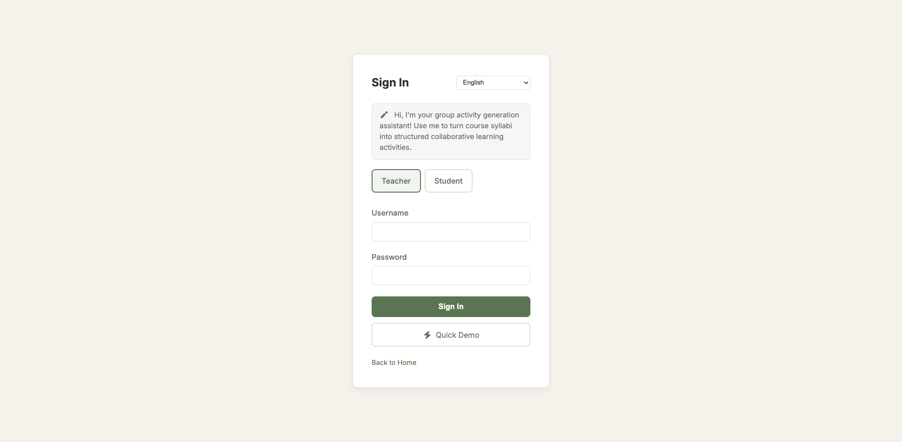
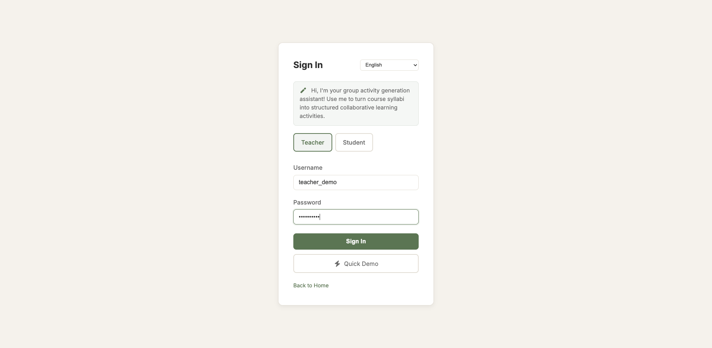
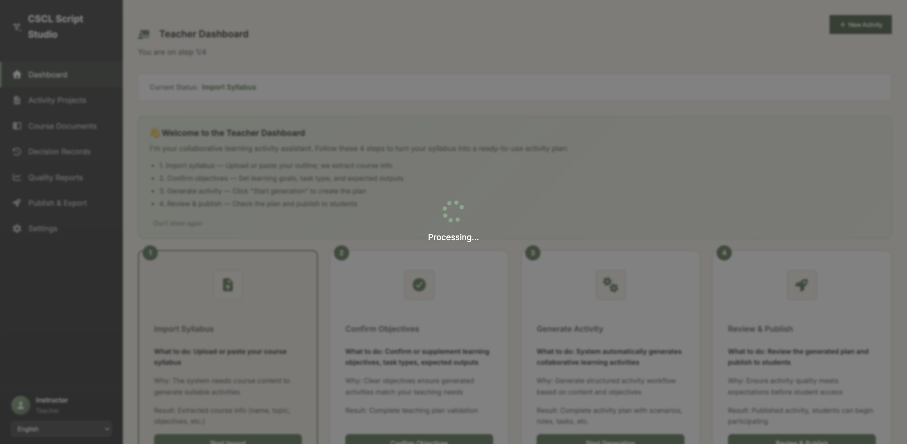
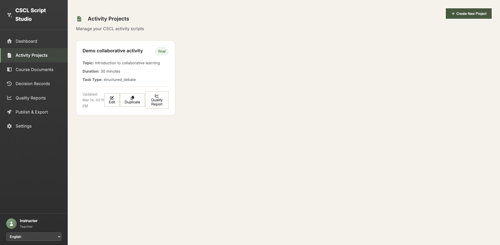
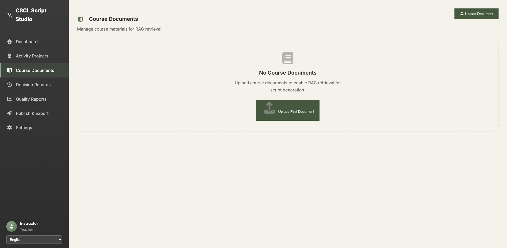
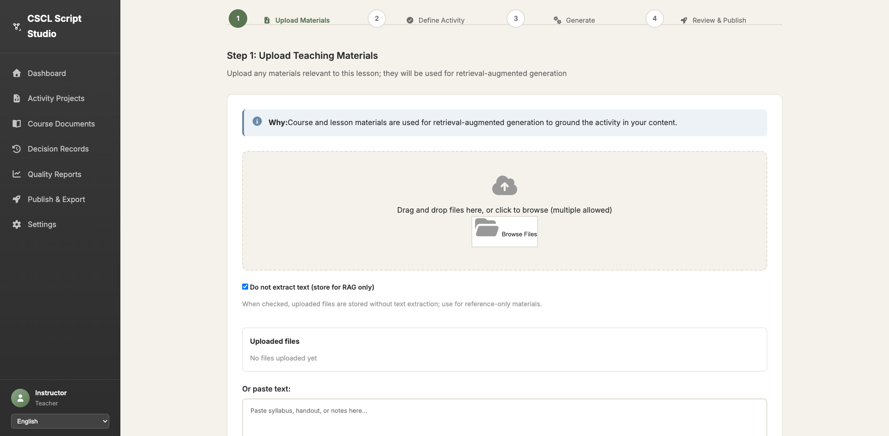
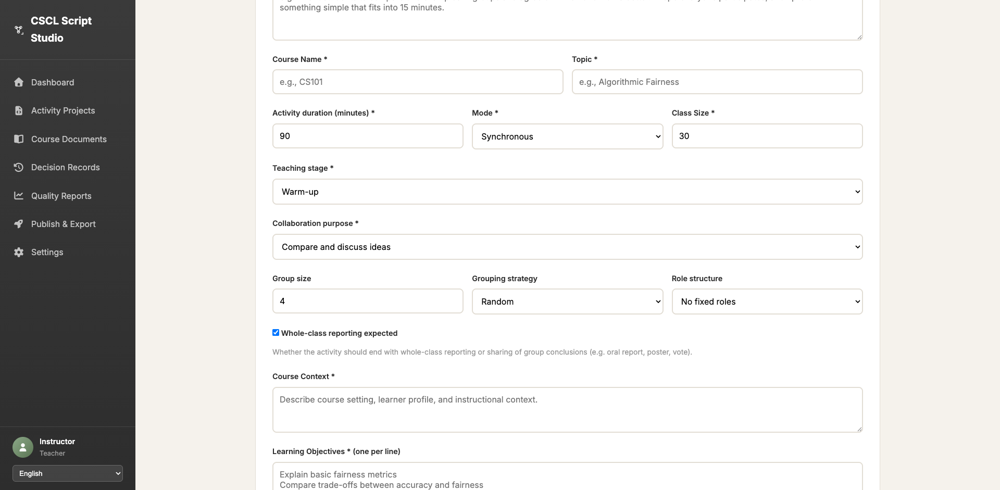
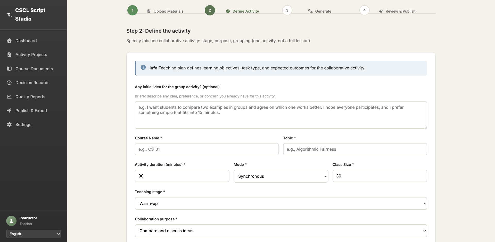

所有14个问题 + Initial Idea新功能验证
通过
57%
失败
14%
未测试
29%
总计
100%
验证内容: 侧边栏正常显示,包含8个导航链接
详情: 侧边栏结构完整,所有导航项都可见
截图: 01_login_page.png, 02_login_filled.png, 03_after_login.png, 04_sidebar.png
验证内容: 活动项目页面显示Edit和Duplicate按钮
详情: 找到1个Edit按钮和1个Duplicate按钮,正常显示在项目卡片上
截图: 05_activity_projects.png
验证内容: 课程文档页面不显示长文本预览
详情: 没有发现超过500字符的文本预览块
截图: 06_course_documents.png
验证内容: Step 1上传页面没有material_level单选按钮
详情: 检查所有radio按钮,未发现material_level相关选项
截图: 08_step1_page.png
验证内容: Step 1页面的"不提取文字"复选框默认为选中状态
详情: 找到复选框"Do not extract text (store for RAG only)",默认状态为选中
截图: 08_step1_page.png
验证内容: Step 1页面显示"已上传的文件"区域
详情: 页面包含"Uploaded"相关文本和区域
截图: 08_step1_page.png
验证内容: Step 2页面顶部包含Initial Idea输入字段
详情: 找到8个textarea,页面包含Initial Idea相关文本,字段位于表单顶部
截图: 09_step2_page.png, 10_step2_top.png
Initial Idea字段已成功添加到Step 2页面顶部,位于课程名称之前,符合设计要求。
验证内容: 成功登录到教师界面
详情: 登录流程正常,进入Dashboard
截图: 01_login_page.png, 02_login_filled.png, 03_after_login.png
失败原因: 无法找到Quality Reports链接
技术详情: 使用了错误的data-view值 (quality 而不是 quality-reports)
需要使用正确的选择器: a[data-view='quality-reports']
失败原因: 无法填写Step 2的必填字段,元素不可交互
技术详情: 在尝试填写课程名称等字段时,遇到"element not interactable"错误
原因: 需要完成脚本生成流程才能到达Step 4
建议: 需要单独的长时间测试(生成过程约30-60秒)
原因: 需要完成脚本生成流程才能到达Step 4
建议: 需要单独的长时间测试
原因: 需要完成脚本生成流程才能到达Step 4
建议: 需要单独的长时间测试
原因: 需要完成脚本生成流程才能到达Step 4
建议: 需要单独的长时间测试








a[data-view='quality'] 到 a[data-view='quality-reports']页面的侧边栏导航链接使用data-view属性而不是传统的href:
<a href="#" class="nav-item" data-view="scripts">Activity Projects</a>
<a href="#" class="nav-item" data-view="documents">Course Documents</a>
<a href="#" class="nav-item" data-view="quality-reports">Quality Reports</a>许多按钮通过JavaScript处理点击事件:
<button class="btn-primary" onclick="createNewScriptProject()">New Activity</button>"不提取文字"复选框的英文标签为: Do not extract text (store for RAG only)